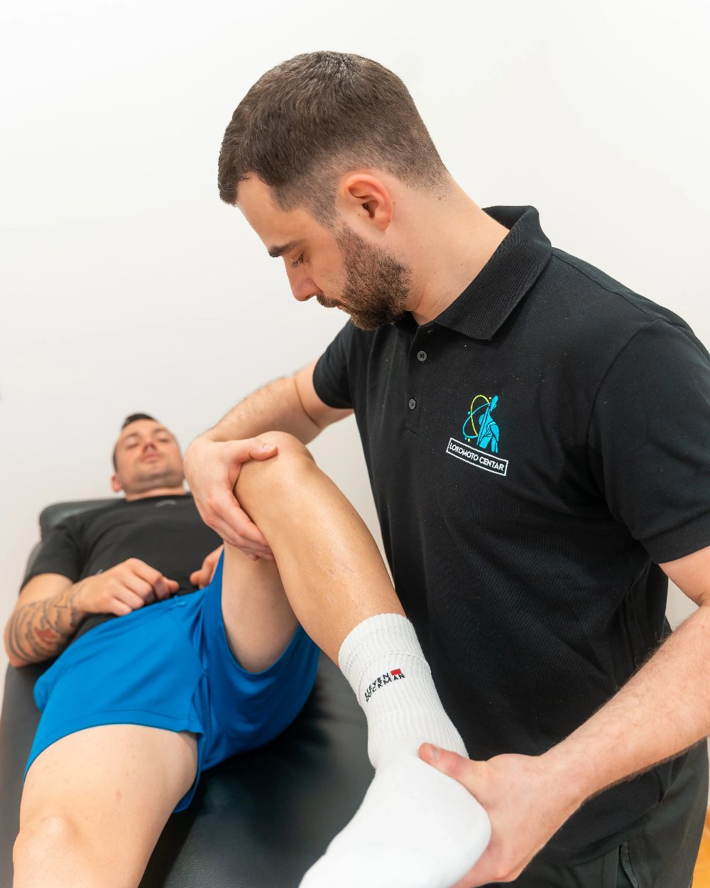
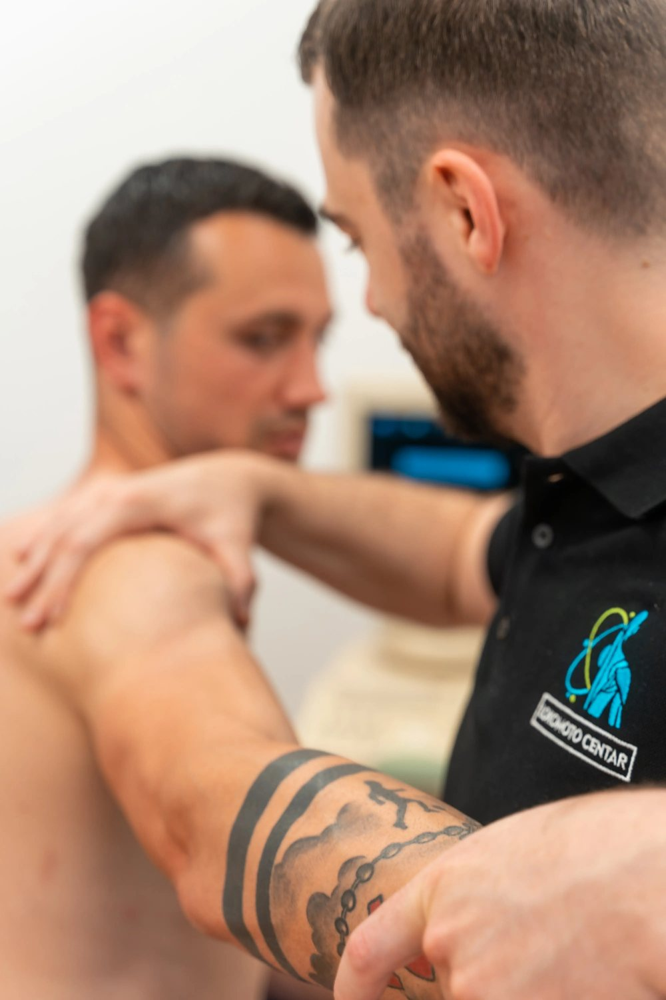
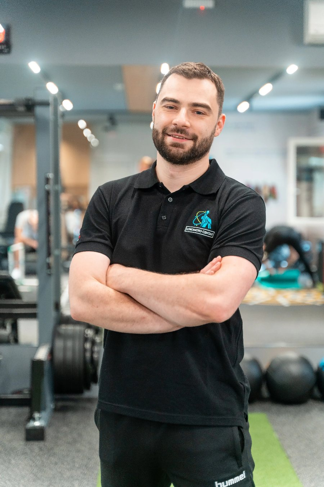
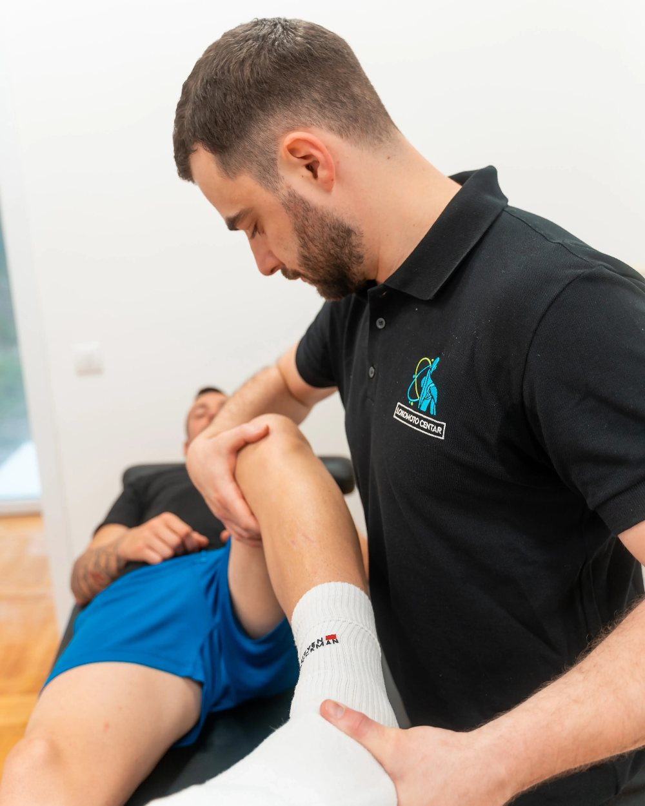

trenere i fizijatre
Od prvog testa do povratka punom opterećenju.
Nauči kako da od nalaza dođeš do izbora terapije, kriterijuma za sledeću fazu i povratka punom opterećenju kod bola u donjem delu leđa.
- Kad?31.10. i 1.11.2026.
- Gde?Lokomoto Centar, Beograd
- Kako?Teorija i rad u parovima
- Koliko nas?Grupa od 20 polaznika

Znaš mnogo vežbi.
Ali kako biraš pravu za pacijenta ispred sebe?
Već poznaješ anatomiju, testove i različite tehnike.
Problem nastaje kada sve to treba povezati u odluku koja odgovara nalazu i trenutnom kapacitetu konkretnog pacijenta.
- 01Ista terapija kod jednog pacijenta daje rezultat, a kod drugog ne, bez jasnog objašnjenja zašto.
- 02Nisi siguran koju vežbu da izabereš za trenutni nalaz i kapacitet pacijenta.
- 03Ne znaš kada je vreme za sledeću fazu ili veće opterećenje.
- 04Pasivni tretman donese olakšanje, ali se problem ponovo vraća.
- 05Kada napredak izostane, menjaš pristup bez jasnog kriterijuma šta pokušavaš da promeniš.
Vežba nije rešenje. Vežba je alat.
Ova edukacija ne daje još jednu listu vežbi za određenu dijagnozu. Uči te kako da prikupiš relevantne informacije, protumačiš nalaz, izabereš odgovarajući alat i proceniš kada je vreme za sledeći korak.
Razlika je kao između nekoga ko ima recept i nekoga ko ume da kuva.
Onaj ko razume proces može da se prilagodi i situaciji koju ranije nije video.
Jedan sistem povezuje sve faze rehabilitacije
Akutna faza
Proceni iritabilnost, trenutni kapacitet i način da pacijentu bezbedno vratiš osnovni pokret.
Rehabilitaciona faza
Izaberi aktivnu terapiju na osnovu nalaza i postepeno povećavaj toleranciju, kontrolu i kapacitet.
Povratak opterećenju
Poveži kliničku rehabilitaciju sa zahtevima posla, teretane ili sporta.
Jasni kriterijumi ove metodologije pomažu terapeutu da doslednije proceni kada je pacijent spreman za sledeću fazu.
Privremeno olakšanje nije isto što i vraćanje kapaciteta.
Šta ćeš moći da uradiš posle svakog koraka
- →Prepoznaješ kada pacijenta možeš da tretiraš, a kada treba da ga uputiš dalje.
- →Pravilno izvodiš i tumačiš ključne testove za donji deo leđa.
- →Lakše razlikuješ diskus herniju, fasetni sindrom, stenozu i nespecifični bol.
- →Povezuješ nalaz sa izborom terapije, umesto da koristiš isti protokol za svaku dijagnozu.
- →Menjaš fazu na osnovu definisanih kriterijuma, a ne samo prema osećaju.
- →Povezuješ kliničku rehabilitaciju sa povratkom poslu, teretani ili sportu.
Odlaziš sa sistemom koji možeš da primeniš već od ponedeljka.
Kriterijumi predstavljaju praktične kliničke standarde ove metodologije koji omogućavaju doslednije praćenje pacijenta. Ne predstavljaju univerzalne ili naučno validirane granice primenljive na svakog pacijenta bez individualne procene.
Za fizioterapeute, trenere i fizijatre koji rade sa bolom u leđima
Ako si na početku karijere
Dobijaš strukturu umesto improvizacije. Odluke ne zasnivaš na nasumičnom izboru vežbi.
Ako već imaš iskustva
Povezuješ tehnike i testove koje već koristiš u pregledan sistem sa jasnim redosledom.
Ako radiš sa sportistima
Kliničku rehabilitaciju povezuješ sa tegovima i pliometrijom. Kurs pokriva povratak punom opterećenju.
Ako radiš sa akutnim pacijentima
Dobijaš okvir za procenu iritabilnosti i crvenih zastavica. Osnovni pokret vraćaš bezbedno.
Mlađim stručnjacima edukacija daje strukturu od početka, dok iskusnijima pomaže da povežu znanje i tehnike koje su godinama prikupljali.
Edukacija podrazumeva osnovno poznavanje anatomije, pokreta i rada sa klijentima ili pacijentima. Ne zamenjuje formalno obrazovanje, licencu ni specijalizaciju.
Od razumevanja bola do povratka treningu
Procena i dijagnostika
- Bol, pokret, kapacitet i tolerancija tkiva.
- Funkcionalna anatomija koja se koristi u praksi.
- Biomehanika kičme i lumbopelvični ritam.
- Diferencijalna dijagnoza i crvene zastavice.
- Kada je snimanje opravdano.
- Praktični blok sa izvođenjem i tumačenjem testova.
Terapija i primena
- Proces razmišljanja terapeuta.
- Rad u akutnoj fazi.
- Aktivna terapija na osnovu nalaza.
- Progresija u trening.
- Rad sa trakama, bučicama, šipkom, hex barom, kablovima i pliometrijom.
- Slučajevi iz prakse, od procene do povratka opterećenju.
Teorija se obrađuje samo u meri u kojoj pomaže da razumeš i doneseš bolju odluku. Veliki deo oba dana posvećen je praktičnom radu.
Testove izvodiš, tumačiš i odmah dobijaš korekciju
Testove nećeš samo gledati na slajdovima. Izvodićeš ih u paru, tumačiti nalaze i dobijati korekciju predavača dok radiš.
Grupa je ograničena na 20 polaznika kako bi svaki učesnik imao dovoljno prostora za praktičan rad i povratnu informaciju.
- →Rad u parovima
- →Direktne korekcije
- →Analiza nalaza

Ono što nosiš kući i koristiš od ponedeljka
Kompletan sistem procene
Baterija testova i standardi koji ti pomažu da procenu sprovodiš doslednije.
Gotov obrazac za testiranje pacijenta
Ne moraš sam da praviš strukturu procene i možeš da ga koristiš već pri sledećem pregledu.
Tabele diferencijalne dijagnoze
Pomažu da organizuješ nalaze i doneseš odluku. Ne zamenjuju kliničko rasuđivanje.
Liste za proveru kriterijuma progresije
Pomažu da doslednije proceniš prelazak između faza, umesto procene po osećaju.
Kompletna skripta i handout materijali
Pratiš objašnjenje na predavanju umesto da zapisuješ i kasnije se vraćaš materijalu.
Praktično iskustvo
Testove izvodiš tokom edukacije, ne prvi put pred pacijentom.
WhatsApp grupa nakon edukacije
Ostaješ povezan sa predavačem i polaznicima za dodatna pitanja.
Potvrda o prisustvu
Po završetku dobijaš potvrdu da si prisustvovao edukaciji.
Potvrda ne nosi stručne bodove i ne predstavlja zamenu za formalno obrazovanje, stručnu licencu ili rad u okviru sopstvenih profesionalnih kompetencija.

Edukaciju vodi Novak Ilić
Novak Ilić je fizioterapeut i osteopata, vlasnik i jedan od osnivača Lokomoto centra u Beogradu. Više od petnaest godina radi sa pacijentima kroz procenu, rehabilitaciju i povratak svakodnevnim i sportskim aktivnostima.
Njegov rad zasniva se na individualnoj proceni i povezivanju fizikalne terapije, aktivne rehabilitacije i povratka svakodnevnim i sportskim opterećenjima.
U okviru Lokomoto centra radi sa sportistima i rekreativcima, uz pristup koji obuhvata funkcionalnu dijagnostiku, individualno planiranu rehabilitaciju i kontrolisanu progresiju opterećenja.
Na edukaciji prenosi način razmišljanja koji povezuje nalaz, izbor terapije i sledeći korak u rehabilitaciji.
Podaci za dopunu pre finalnog objavljivanja
Za potpunije predstavljanje predavača, u finalnoj verziji bilo bi dobro dopuniti sledeće proverljive podatke.
- →Formalno obrazovanje i godina diplomiranja [POPUNITI: podaci od klijenta]
- →Osteopatska škola i godina završetka [POPUNITI: podaci od klijenta]
- →Sertifikacije i završene edukacije [POPUNITI: podaci od klijenta]
- →Godina osnivanja Lokomoto centra [POPUNITI: podaci od klijenta]
- →Ranije održane edukacije ili predavanja [POPUNITI: podaci od klijenta]
- →Saradnja sa klubovima ili sportistima [POPUNITI: podaci od klijenta]

Pogledajte prostor Lokomoto centra i deo praktičnog rada sa pacijentom.
Dva dana praktičnog rada, materijali i podrška nakon edukacije
Sve što si video do sada — sistem procene, program oba dana, praktičan rad u parovima i materijali — ulazi u jednu kotizaciju. Ispod je tačan spisak.
Dva dana uživo
- ✓Dva dana edukacije uživo, 31.10. i 1.11.2026.
- ✓Praktičan rad u parovima
- ✓Direktne korekcije predavača
Materijali koje nosiš kući
- ✓Obrazac za testiranje pacijenta
- ✓Tabele diferencijalne dijagnoze
- ✓Liste kriterijuma za prelazak između faza
- ✓Kompletna skripta i handout materijali
Posle edukacije
- ✓WhatsApp grupa sa predavačem i polaznicima
- ✓Potvrda o prisustvu
Plaćanje se vrši uplatom na račun.
31.10. i 1.11.2026. · Lokomoto Centar, Tabanovačka 27b, Beograd · Maksimalno 20 polaznika
Broj mesta je ograničen na 20 kako bi svaki polaznik učestvovao u praktičnom radu i dobio direktnu korekciju predavača.
- ✓Predavač sa 15+ godina prakse
- ✓Slanje prijave ne izvršava naplatu
- ✓Nema dodatnih troškova kotizacije
- ·Potvrda: dobijaš potvrdu o prisustvu. Edukacija ne nosi stručne bodove.
- ·Otkazivanje: puna refundacija je moguća najkasnije mesec dana pre početka edukacije. Nakon tog roka uplata se ne refundira.
Popunjavanje traje oko minut. Prijava ne izvršava naplatu.
Cena, bodovi, otkazivanje i ostala pitanja
+Već sam bio na kursevima za leđa. Šta je ovde drugačije?
Fokus nije na novim tehnikama nego na sistemu odlučivanja koji povezuje ono što već znaš. Problem je najčešće izbor i redosled, ne broj vežbi.
+Imam malo iskustva. Da li je edukacija za mene?
Da, potrebno je osnovno poznavanje anatomije i principa rada. Publika je namerno mešovita: početnici dobijaju osnovu, iskusniji organizuju postojeće znanje.
+Radim sa sportistima, a ne sa akutnim pacijentima.
Edukacija pokriva i prelazak u trening sa spoljnim opterećenjem: trake, bučice, šipka, hex bar, kablovi i pliometrija, uz kriterijume za povratak punom treningu.
+Da li mogu odmah da primenim naučeno?
Dobijaš gotove obrasce, tabele i liste za proveru, a testove praktično uvežbavaš tokom edukacije.
+Da li je edukacija previše teorijska?
Teorija se obrađuje samo u meri u kojoj objašnjava odluke. Veliki deo oba dana posvećen je testiranju i analizi slučajeva.
+Da li edukacija garantuje rezultate kod svakog pacijenta?
Ne. Nijedan sistem to ne može. Edukacija daje strukturu za procenu i odlučivanje, ali se svaki slučaj i dalje procenjuje individualno.
+Da li dobijam sertifikat?
Dobijaš potvrdu o prisustvu. Potvrda ne nosi stručne bodove i ne zamenjuje formalno obrazovanje ili licencu.
+Šta je uključeno u cenu?
Dva dana edukacije, praktičan rad, skripta i handout materijali, obrasci i liste za proveru, WhatsApp grupa i potvrda o prisustvu.
+Zašto edukacija košta 399 €?
Broj mesta je ograničen na 20 kako bi svaki polaznik radio u paru i dobio direktnu korekciju. To znači manju grupu i više vremena po polazniku nego na edukacijama sa velikim brojem prijavljenih. U cenu ulaze dva puna dana uživo, kompletni materijali i pristup WhatsApp grupi posle edukacije.
+Kako se vrši plaćanje?
Uplatom na račun. Nakon prijave dobijaš podatke i instrukcije za uplatu.
+Kako se koriste podaci iz prijave?
Podaci koje ostaviš u prijavi koriste se isključivo za organizaciju edukacije: potvrdu prijave, slanje instrukcija za uplatu i obaveštenja o rasporedu. Ne prosleđuju se trećim licima.
+Šta se dešava ako ne mogu da prisustvujem?
Puna refundacija je moguća ako otkažeš najkasnije mesec dana pre edukacije. Nakon tog roka gubi se pravo na refundaciju.
Podaci za prijavu
Imaš pitanje pre prijave? Pozovi 011 4095924 ili piši na lokomoto.centar@gmail.com.
Poveži procenu, terapiju i progresiju u jedan sistem.
Dva dana praktičnog rada za jasnije odluke pri svakom sledećem radu sa pacijentom.
Najviše 20 polaznika zbog praktičnog rada i korekcija predavača.
- 31.10. i 1.11.2026.
- Lokomoto Centar, Beograd
- 399 €